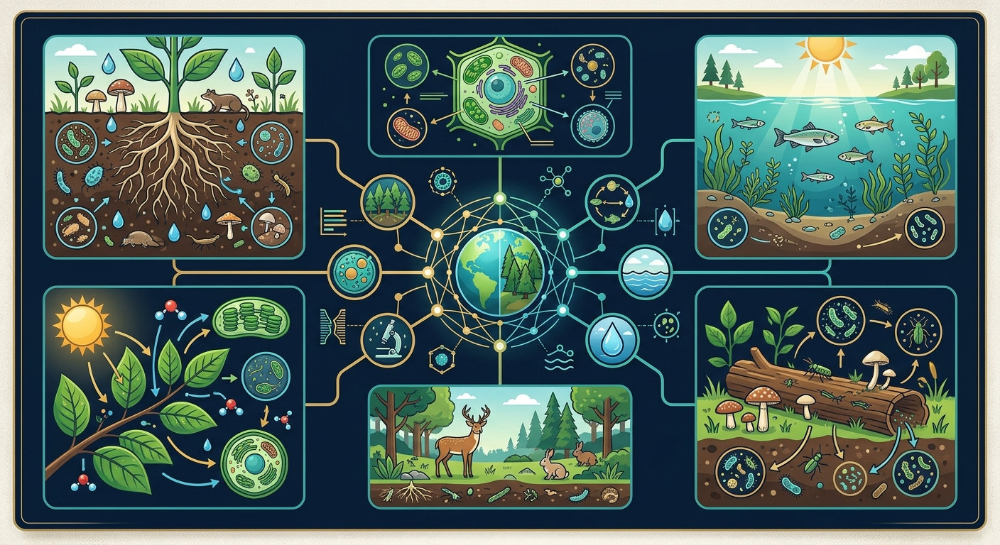
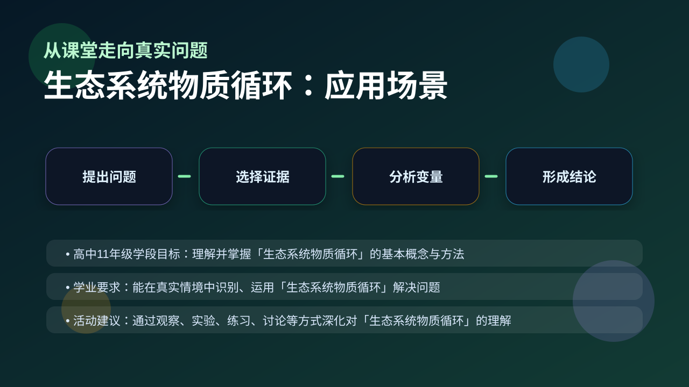

Gallery v1.0.0 · skill v7.14
生命系统怎样在种群、群落和生态系统层面保持动态平衡？

先选一个卡点。后面的例子、互动和 AI 学伴都会围绕它给你最小提示。
选择或输入后，本课会围绕你的问题展开。
如果学生只说出概念名称，继续追问：题干里哪个证据最关键？这个证据对应分子、细胞、个体还是生态系统层级？如果改变 光合作用、呼吸作用、分解作用、燃烧和人类活动强度 中的一个条件，结果会怎样？这三问能把答案从背诵推进到科学解释。
❓ 为什么说'落叶不是无情物'？
❓ 碳循环和呼吸作用有啥关系？
❓ 为啥说物质循环是'全球联名款'？
学完这一课，这些问题你都能自信地回答。
已经知道：此前已学过光合作用、呼吸作用及食物链能量流动，知道植物通过光合作用固定二氧化碳，动物通过摄食获取有机物，微生物参与分解作用。
但问题是：学生常混淆碳元素的形态转换（如CO2与有机物）与空间转移（如大气到生物体），难以理解化石燃料燃烧如何打破自然循环平衡，导致全球变暖。
所以学：当分析城市雾霾成因时，需追溯碳从汽车尾气到植物固碳的路径，评估工厂排放与森林固碳速率的关系，提出基于物质循环的治理方案。
关于生态系统中物质去向的说法正确的是？
设计实验比较不同环境下落叶分解速度
现象入口：碳元素能在大气、植物、动物、微生物和化石燃料之间不断转移。
机制解释：物质循环是元素在生物群落与无机环境之间反复循环，依赖生产者、消费者和分解者共同作用。
证据抓手：证据来自碳循环图、同位素示踪、二氧化碳浓度变化和分解实验。
变量线索：光合作用、呼吸作用、分解作用、燃烧和人类活动强度。做题时先找变量，再判断机制，最后写证据。
情境：碳在生物群落中以有机物形式传递，返回大气主要依靠呼吸、分解和燃烧。
作答路径：森林大火后碳大量释放：燃烧直接转化有机物为CO₂（现象）→破坏生产者导致碳输入减少，分解加速碳输出（机制）→大气CO₂浓度监测数据骤升（证据）
评分提醒：典型失分：混淆物质循环与能量流动特点；忽视化石燃料在碳循环中的作用；未区分生物群落内外的碳存在形式。
观察碳循环示意图中箭头指向，识别生产者吸收CO₂与分解者释放CO₂的关键过程
分解碳循环三大环节：生物群落固定碳、生物间传递碳、分解者释放碳
化石燃料燃烧为何打破碳循环平衡？分析工业革命前后碳返回大气速度变化
设计湿地生态系统碳循环模型，需包含水草光合作用与底泥微生物分解

解释温室效应、秸秆还田和生态系统碳汇，都要画出生物群落与无机环境。
提交后会检查你的解释是否包含现象、机制和变量。
真实估算：海洋是最大碳库（约 38000 GtC），大气仅约 750 GtC——燃烧化石燃料把地质碳库快速搬进大气，打破平衡。
💡 探究任务：对比四大碳库的量级，解释为什么只占 2% 的大气碳库变化会引发全球气候问题。
下列哪项是物质循环区别于能量流动的核心特征？
先独立作答，再点选项查看对错与错因。
人工湖藻类爆发的主要原因是
落叶在湖底分解过程中，起关键作用的生物成分是
物质循环与能量流动的本质区别是
藻类通过____作用将无机物转化为有机物
答案：光合
生产者通过光合作用固定无机碳
碳元素主要以____形式在生物群落与无机环境间循环
答案：二氧化碳
碳循环的主要载体形式
下列关于碳循环与能量流动的叙述，正确的是？
学习小结：碳循环通过光合/化能合成将CO₂转化为有机物，经呼吸/分解/燃烧返回大气，物质可全球循环而能量单向流动。
把物质循环画成单向食物链，或忽略无机环境。
只说“增加/减少”不够，要写清改变的是 光合作用、呼吸作用、分解作用、燃烧和人类活动强度 中的哪一个。
没有实验现象、曲线趋势或结构证据，答案就像猜测。
✅ 强调物质可循环而能量逐级散失
💡 混淆两个核心概念的特征
✅ 补充蚯蚓等大型分解者实例
💡 教材插图局限导致认知偏差
口诀：物质循环是个圈，生物环境来回穿
类比：像小区里的共享单车，被不同人重复使用但总量不变
视频用语音和动态画面回顾本课主线：问题情境 → 机制模型 → 证据判断 → 迁移应用。
用 PhET 观察环境压力如何改变种群中不同表型个体的比例，再讨论它和 生态系统物质循环 的关系。
💡 操作提示：改变环境、捕食者或突变条件，记录种群数量曲线，判断哪些变化是个体层面，哪些是种群层面。
列举碳返回大气的三种途径
分析过度砍伐如何破坏碳循环平衡
设计实验验证微生物分解作用对碳回归大气的贡献